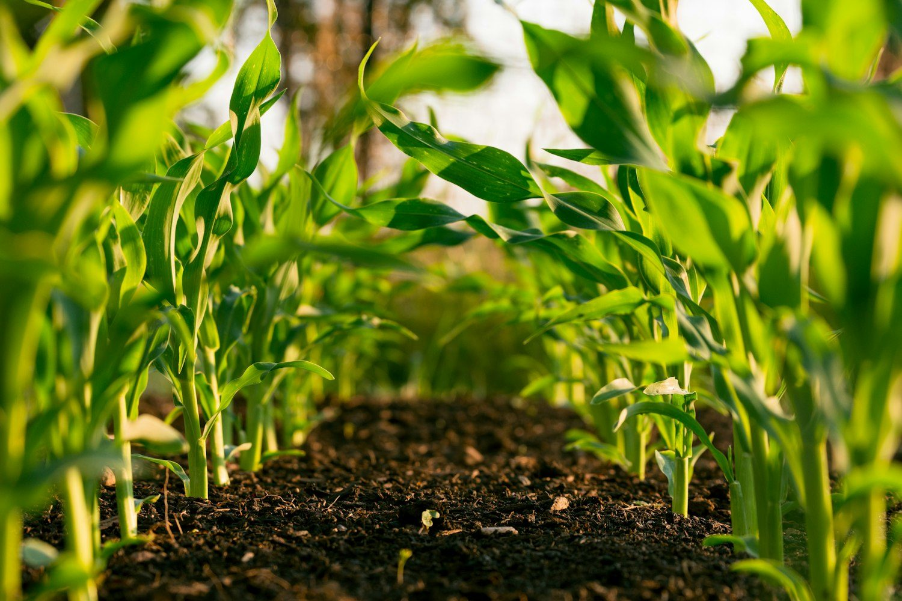

ABOUT FIELDWELLFind crop problems
Find crop problems
in field photos.
For commercial growers and agronomy teams. Fieldwell compares drone and scouting photos, marks signs of crop stress, and turns each survey into a field-by-field inspection report.

A software product
with a specific job.
One drone survey can contain hundreds of overlapping images. The useful job is to compare new observations with the last survey and group repeated signs of stress into areas a field team can inspect.
- Brand
- Fieldwell
- Buyer
- Commercial growers & agronomy teams
- Core output
- A crop-risk map and inspection list
- Product stage
- Review workspace available; Azure model connector ready for configuration.
- Project maintainer
- Precious Arinze / Uniqkode
Team & responsibility
Meet the maintainer and see the review roles in this workflow.
02Development roadmap
See the stages from implemented product tools to a validated rollout.